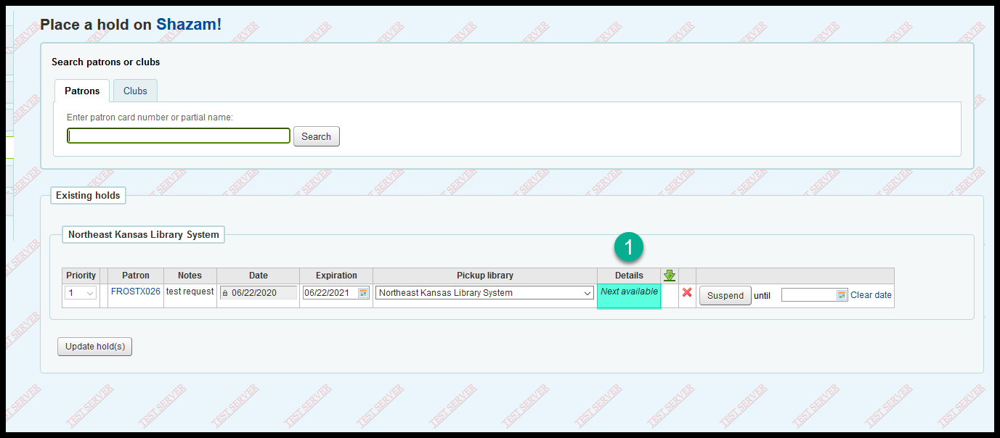
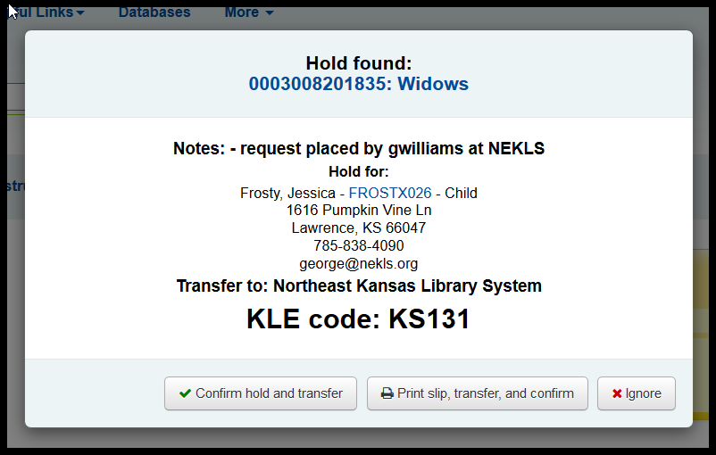

Changes to requests¶
Title vs item level request¶
A long standing bug has been fixed.
BEFORE:
Staff places title level request (note “Next available” in the “Details” column)

When an item is “captured” to fill request, that specific item is tied to that specific request
The specific item is checked out to another patron before the request can be fille
Or the requested item is “Reverted” from “Waiting” to unfilled
BEFORE:
Request can now only be filled by that specific Item
AFTER:
Request reverts to a “Next available” request
Changes in check-in pop-ups¶
Item being returned¶
BEFORE: Only the transfer information appeared in the pop-up

AFTER: The transfer information plus any check-in messages appear in the pop-up
Item with a request at another library¶
BEFORE: Only the “Hold found” informaiton appeared in the pop-up

AFTER: The “Hold found” information plus any check-in messages appear in the pop-up

Item with a request at this library¶
BEFORE: Only the “Hold found” informaiton appeared in the pop-up

AFTER: The “Hold found” information plus any check-in messages appear in the pop-up
Ignoring any pop-up¶
BEFORE: After you clear the pop-up, it’s gone forever

AFTER: Click on the “I” icon to get the pop-up back
Holds awaiting pickup now sorts by last name¶
This has already been fixed on our live system, so no before picture is now possible
Staff can now edit purchase suggestions¶
This has already been fixed on our live system, so no before picture is now possible